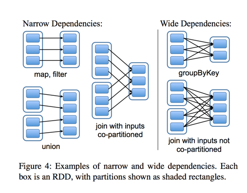

开始
先了解一波专有名词，再去看教程或者文档，应该会比较容易理解吧~~~
大概包含Worker，Driver，Executor，Stage，Task，DAGScheduler，TaskScheduler，RDD，Stage，Shuffle,算子…
从Spark的工作原理开始
从模型开始，到任务名词~
RDD
- RDD 是 Spark 的计算模型。RDD（Resilient Distributed Dataset）叫做弹性分布式数据集合。(本质上是一个只读的分区记录集合，类似Java的Set。每个RDD可以有多个分区（
Partition）)，每个分区可以保存在不同的节点上，从而可以在集群中的不同结点上进行并行计算。- 只读：不能修改，只能通过转换操作生成新的 RDD。
- 分布式：可以分布在多台机器上进行并行处理。
- 弹性：计算过程中内存不够时它会和磁盘进行数据交换。
- 基于内存：可以全部或部分缓存在内存中，在多次计算间重用。
- RDD 的操作分为转化（
Transformation）操作和行动（Action）操作。转化操作就是从一个 RDD 产生一个新的 RDD，而行动操作就是进行实际的计算。
RDD 的操作是惰性的，当 RDD 执行转化操作的时候，实际计算并没有被执行，只有当 RDD 执行行动操作时才会促发计算任务提交，从而执行相应的计算操作。(可以理解为：执行RDD.map().count()时，map()是转化。但是执行到这一步时，并没有具体操作，而是等待下一步的count()这个Action执行。然后count()的执行去触发前面map()的执行。这样有个好处：能针对不同的Action操作，去优化前面的Transformation的计算方法。) - RDD 血缘关系（Lineage）它描述了一个 RDD 是如何从父 RDD 计算得来的。如果某个 RDD 丢失了，则可以根据血缘关系，从父 RDD 重新计算得来。这里应该是有个
RDD的继承关系(DAG 拓扑排序)(这是最重要的，能保持因各种原因丢失数据时，能够重新计算而不是直接任务失败，或者全部重新计算。原理有点像断网续传~)

- RDD 的依赖类型。根据不同的转换操作，RDD 血缘关系的依赖分为窄依赖和宽依赖。窄依赖是指父 RDD 的每个分区都只被子 RDD 的一个分区所使用。宽依赖是指父 RDD 的每个分区都被多个子 RDD 的分区所依赖。
Spark 的这种依赖关系设计，使其具有了天生的容错性，大大加快了 Spark 的执行速度。RDD 通过血缘关系记住了它是如何从其他 RDD 中演变过来的。当这个 RDD 的部分分区数据丢失时，它可以通过血缘关系获取足够的信息来重新运算和恢复丢失的数据分区，从而带来性能的提升。(印证了第三点)
相对而言，窄依赖的失败恢复更为高效，它只需要根据父 RDD 分区重新计算丢失的分区即可，而不需要重新计算父 RDD 的所有分区。而对于宽依赖来讲，单个结点失效，即使只是 RDD 的一个分区失效，也需要重新计算父 RDD 的所有分区，开销较大。
宽依赖操作就像是将父 RDD 中所有分区的记录进行了“洗牌”，数据被打散，然后在子 RDD 中进行重组。 - 提前提一下阶段（
Stage）。用户提交的计算任务是一个由 RDD 构成的 DAG，如果 RDD 的转换是宽依赖，那么这个宽依赖转换就将这个 DAG 分为了不同的阶段（Stage)。由于宽依赖会带来“洗牌”，所以不同的 Stage 是不能并行计算的，后面 Stage 的 RDD 的计算需要等待前面 Stage 的 RDD 的所有分区全部计算完毕以后才能进行。（这里有点难，得画图想想。图中阶段2和阶段3可以同时进行。理解为：假设分区1较大，分区2较小，分区2很快计算完成阶段2的内容。然后接着分区2就接着进行阶段3计算。这时分区1还在阶段2。所以窄依赖可以跨阶段并行）
这点就类似于在 MapReduce 中，Reduce 阶段的计算必须等待所有 Map 任务完成后才能开始一样。
在对 Job 中的所有操作划分 Stage 时，一般会按照倒序进行，即从 Action 开始，遇到窄依赖操作，则划分到同一个执行阶段，遇到宽依赖操作，则划分一个新的执行阶段。后面的 Stage 需要等待所有的前面的 Stage 执行完之后才可以执行，这样 Stage 之间根据依赖关系就构成了一个大粒度的 DAG。(前面是我的想法…下图这个才是真的，想想也是：既然可以并行，那不必细分Stage了。而且划分Stage时倒序进行真的太合理了，这也解释上文第二点说的Transformation和Action操作：根据Action倒推Transformation，然后再分Stage。牛逼哄哄~)
- RDD缓存。Spark RDD 是惰性求值的，而有时候希望能多次使用同一个 RDD。如果简单地对 RDD 调用行动操作，Spark 每次都会重算 RDD 及它的依赖，这样就会带来太大的消耗。为了避免多次计算同一个 RDD，可以让 Spark 对数据进行持久化。(理解为：多次调用
RDD.map().count()时，由于惰性求值原因，每次调用.count()时，得重新计算.map()，而map又依赖RDD，RDD可能又依赖父RDD…导致整条链路得重新计算一遍！)
Spark 可以使用 persist 和 cache 方法将任意 RDD 缓存到内存、磁盘文件系统中。缓存是容错的，如果一个 RDD 分片丢失，则可以通过构建它的转换来自动重构。被缓存的 RDD 被使用时，存取速度会被大大加速。一般情况下，Executor内存的 60% 会分配给 cache，剩下的 40％ 用来执行任务。 - 没了，终于了解完
RDD了，扯出来了很多核心内容。不愧是核心名词。
Application
application（应用）其实就是用spark-submit提交的程序。比方说spark examples中的计算pi的SparkPi。一个application通常包含三部分：从数据源（比方说HDFS）取数据形成RDD，通过RDD的transformation和action进行计算，将结果输出到console或者外部存储（比方说collect收集输出到console）。(比较容易理解，一个要submit的py文件，Jar包，Scala的文件)
Driver
Spark中的Driver感觉其实和yarn中Application Master的功能相类似。主要完成任务的调度以及和executor和cluster manager进行协调。有client和cluster联众模式。client模式driver在任务提交的机器上运行，而cluster模式会随机选择机器中的一台机器启动driver。从spark官网截图的一张图可以大致了解driver的功能。(这个图解释的真好，说明了很多概念的关系)

Job
Spark中的Job和MR中Job不一样。MR中Job主要是Map或者Reduce Job。而Spark的Job其实很好区别，一个action算子就算一个Job，比方说count()，first()等。
Task
Task是Spark中最新的执行单元。RDD一般是带有partitions的，每个partition的在一个executor上的执行可以任务是一个Task。（那宽依赖不是得产生N多个Task?）
Stage
Stage概念是spark中独有的。一般而言一个Job会切换成一定数量的stage。各个stage之间按照顺序执行。至于stage是怎么切分的，首选得知道spark论文中提到的narrow dependency(窄依赖)和wide dependency（ 宽依赖）的概念。其实很好区分，看一下父RDD中的数据是否进入不同的子RDD，如果只进入到一个子RDD则是窄依赖，否则就是宽依赖。宽依赖和窄依赖的边界就是stage的划分点。从spark的论文中的两张截图，可以清楚的理解宽窄依赖以及stage的划分。(前面说明了~ 直接看图)


Worker
工作节点吧，应该是指（Master - Slave）模式的 Slave。负责计算的节点
Shuffle
- 把父RDD中的KV对按照Key重新分区，从而得到一个新的RDD。也就是说原本同属于父RDD同一个分区的数据需要进入到子RDD的不同的分区。(就是宽依赖的重新分区操作?)
- Map-Reduce的输入数据通常是HDFS中的文件，所以数据本地化要求map任务尽量被调度到保存了输入文件的节点执行。但是，有一些计算逻辑是无法简单地获取本地数据的，reduce的逻辑都是如此。对于reduce来说，处理函数的输入是key相同的所有value，但是这些value所在的数据集(即map的输出)位于不同的节点上，因此需要对map的输出进行重新组织，使得同样的key进入相同的reducer。
- shuffle移动了大量的数据，对计算、内存、网络和磁盘都有巨大的消耗，因此，只有确实需要shuffle的地方才应该进行shuffle，否则尽可能避免shuffle。(嗯，点头赞同)
- 会触发
Shuffle操作的算子:- 去重操作(
distinct) - 聚合操作(
reduceByKey、groupBy、groupByKey、aggregateByKey、combineByKey等) - 排序操作(
sortBy、sortByKey等) - 重分区操作(
repartition、repartitionAndSortWithinPartitions、coalesce(shuffle=true)等) - 集合或者表操作(
join、cogroup、leftOuterJoin、intersection、subtract、subtractByKey)
- 去重操作(
DAGScheduler
实现将Spark作业分解成一到多个Stage，每个Stage根据RDD的Partition个数决定Task的个数，然后生成相应的Task set放到TaskScheduler中。(挺好奇如何分解的，但先打住，后面填坑)
DAGScheduler是任务调度中的其中一个环节，是任务调度的第一步。DAGScheduler是Spark的较高层次的调度器，它实现了面向Stage（stage-oriented）的调度。它把一个通过RDD的转换操作（RDD Transformations）得到的血缘关系（RDD Lineage）转化成多个Stage，然后为每个Stage生成一个任务集（TaskSet），并把该任务集交给TaskScheduler处理。
DAGScheduler把每个Job划分成一个或多个Stage，计算和创建一个Stage的DAG，并跟踪RDD和Stage的输出，找出一个最小调度的DAG去执行该Job。然后，它把Stage作为TaskSets传递给TaskScheduler，一个TaskSet包含每个Stage中可以立即执行的独立任务集合。
具体来说DAGScheduler的功能如下：
- 划分和创建Stage：根据RDD之间的依赖类型（窄依赖或宽依赖），为每个Job划分和创建Stage，多个Stage之间相互依赖，形成一个DAG（有向无环图）。
- 决定运行Task的最佳位置：根据RDD的依赖关系，缓存或Shuffling数据的位置来计算运行Task的最佳位置。
- 为每个Stage创建一个TaskSet，并把TaskSet作为参数传递给TaskScheduler。
- 处理失败的Stage：为了从失败中恢复，同样的Stage可能会提交多次。例如：由于前一个Stage的map输出文件丢失，TaskScheduler报告了一个任务失败，DAGScheduler会重新提交丢失的Stage。这是通过一个带有FetchFailed或ExecutorLost的CompletionEvent事件检测到的。DAGScheduler将等待一小段时间以查看其他节点或任务是否失败，然后为任何缺失的Stage重新提交TaskSet。
- 当任务运行完成后，清空所有的缓存和临时数据。
- 处理各种事件，包括内部的事件，也包括Executor端的状态更新等事件。
TaskScheduler
实现Task分配到Executor上执行。(偷个懒应该没人知道吧)
spark的Task的调度，我们要明白其调度过程，其根据不同的资源管理器拥有不同的调度策略，因此也拥有不同的调度守护进程，这个守护进程管理着集群的资源信息，spark提供了一个基本的守护进程的类，来完成与driver和executor的交互：CoarseGrainedSchedulerBackend，它应该运行在集群资源管理器上，比如yarn等。他收集了集群work机器的一般资源信息。当我们形成tasks将要进行调度的时候，driver进程会与其通信，请求资源的分配和调度，其会把最优的work节点分配给task来执行其任务。而TaskScheduleImpl实现了task调度的过程，采用的调度算法默认的是FIFO的策略，也可以采用公平调度策略。(有点不懂了，后面再回来看)
最后介绍下流程
- 首先在SparkContext初始化的时候会创建DAGScheduler,这个DAGScheduelr每个应用只有一个。然后DAGScheduler创建的时候，会初始化一个事件捕获对象，并且开启监听。之后我们的任务都会发给这个事件监听器，它会按照任务的类型创建不同的任务。
- 再从客户端程序方面说，当我们调用action操作的时候，就会触发runjob，它内部其实就是向前面的那个事件监听器提交一个任务。
- 最后事件监听器调用DAGScheduler的handleJobSubmitted真正的处理。
- 处理的时候，会先创建一个resultStage，每个job只有一个resultstage，其余的都是shuffleStage.然后根据rdd的依赖关系，按照广度优先的思想遍历rdd，遇到shufflerdd就创建一个新的stage。
- 形成DAG图后，遍历等待执行的stage列表，如果这个stage所依赖的父stage执行完了，它就可以执行了；否则还需要继续等待。
- 最终stage会以taskset的形式，提交给TaskScheduler，然后最后提交给excutor。
- [Applicatio 1] Driver（代表一个Application）
- [Job ==>1] 在SparkContext的创建过程中，sc会创建DAGScheduler和TaskScheduler，DAGScheduler主要对application划分stage，创建一批task放到taskset中用于执行application
- [stage ==>2] 如何来划分stage，是有相应的stage的划分算法–>就根据rdd是否宽依赖来划分的，
- [TaskSet] 假设我们rdd有三个分区partition，那么会产生三个task，存放到TaskSet，
- [Task] TaskScheduler就会接收到DAGScheduler的一个通知吧，从taskSet中推送task任务到worker中的executor进程中去执行任务，在taskscheduler中根据，程序的启动方式，创建一个实现ShedulerBackend
- SchedulerBackend：不同的子类对应不同的集群模式
后记
还有个Executor和DataFrame没看，Executor能猜个大概，后面的再找一天对比python库Pandas的DataFrame有哪些异同~
明天开始看官方文档，激动搓手手~